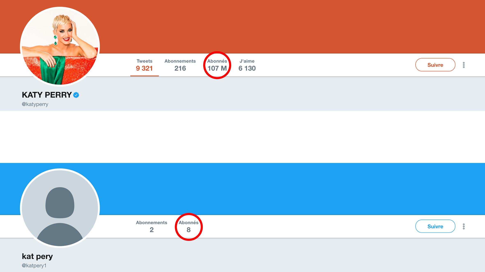
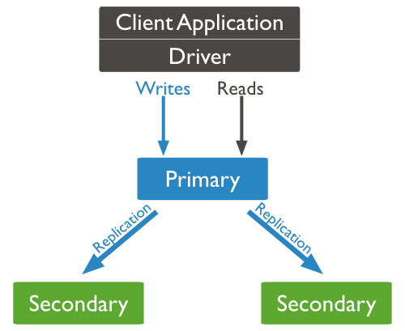

The Humongous Database
Geoffrey Berard / @geofberard
Plan
- I. MongoDB Presentation
- Schemaless
- BSon
- Document Model
- Performance
- II. MongoDB Architecture
- Replica Set
- Sharding
- III. MongoDB CRUD
- CREATE
- READ
- UPDATE
- DELETE
- IV. Software with MongoDB
- Architecture
- V. Practical
Presentation
MongoDb
Présentation
- Document oriented Data Base
- Non relational
- Made in C++
- Scalable : Auto Sharding
- Dynamic : Schemaless
- No transactions
MongoDb
Functionnalities
- Text Search
- GeoSearch
- Aggregation
- Map-Reduce
MongoDb
Supported languages
Document
JSon
{
_id : 1,
first_name: 'Victor',
surname: 'Hugo',
groups : [ "Writer", "Painter"],
address:{
street: '6 Place des Vosges',
city: 'Paris',
zip: '75004'
}
}
Document
JSon
Available Data Types :
- Array
- Object
- String
- Number
- Boolean
- Null
Schemaless
Exemple
{
first_name: 'Hannibal',
surname: 'Smith',
},
{
first_name: 'Gregory',
surname: 'House',
title:"Dr",
},
{
first_name: 'Victor',
surname: 'Hugo',
address:{
number: 6,
street_name: 'Place des Vosges',
city: 'Paris',
zip: '75004'
}
}
BSON
Binary Representation of JSON
{hello: "world"}
Gives in BSON
\x16\x00\x00\x00\x02hello\x00
\x06\x00\x00\x00world\x00\x00
BSON
Enriched Types
Position
Relational VS Document
Models Differences
Relational VS Document
Relational Model
Relational VS Document
MongoDB Model
{
first_name: ‘Paul’,
surname: ‘Mc Cartney’,
city: ‘London’,
location: [45.123,47.232],
cars: [
{ model: ‘Bentley’,
year: 1973,
value: 100000, … },
{ model: ‘Rolls Royce’,
year: 1965,
value: 330000, … }
}
}
Relational VS Document
Terminology
Performances
Locality
Caching
Inline Update
Document Model
Benefits
- Efficient
- Super low latency
- Scale Easily
- Agility and flexibility
- Data models can evolve easily
- Companies can adapt to changes quickly
- Intuitive, natural data representation
- Developers are more productive
- Many types of applications are a good fit
- Reduces the need for joins, disk seeks
- Programming is more simple
- Performance can be delivered at scale
Architecture
Replica Set
Presentation

- Two copies or more
- Master / Slave
- Automatic Failover
- Purpose :
- High Availability
- Data Recovery
- Maintenance
Replica Set
Architecture

Replica Set
Organisation
Replica Set
Failover
Scalability
Sharding
Architecture
Sharding
Shard : Cluster Node
Sharding
Config Server
Contains cluster metadatas
- 1 instance in dev, 3 in production
- Contains intervals definitions (chunks)
- Maintenance
Sharding
Mongos : Query Router
- Behaves identically to mongod
- Query router
- Load Balancer
- Dedicated or shared
Sharding
Sharding Key
Requirement :
- Immutablility (key/value)
- Big cardinality
- Distributed
- Should be indexed
- Limited to 512 octets
Sharding
Chunk
- Split if bigger than 64Mo
- Split ≠ Moved
- Split only between 2 différent values
- Moved Automatically
Sharding
Balancing
CRUD
Querying
Query language => methods of objects
Identifier
Query language => methods of objects
{
_id : 1,
first_name: 'Victor',
surname: 'Hugo',
groups : [ "Writer", "Painter"],
}
- Unique
- Can't be changed
CREATE
insert
> db.member.insert({new_document})
WriteResult({ "nInserted" : 1 })
Create the collection if necessary
> db.member.insert({first_name: "John", last_name: "Doe"})
> db.member.insert({first_name: "Jean", last_name: "Dupont", city_of_birth: "Paris"})
CREATE
INDEX
Syntax (Index types)
createIndex( { userid: index_type } )
> db.records.createIndex( { userid: 1 } ) // Ascending index
> db.records.createIndex( { userid: -1 } ) // Descending index
CREATE
mongoimport
Supported file format
- JSon
- CSV
- TSV
$ ./mongoimport --db test --collection zips --file ../../../Downloads/zips.json
READ
Find
Returning all elements of a collection:
> db.member.find()
{ "_id" : ObjectId("54853dd6dd8fc0fec931fcbc"), "first_name" : "John", "last_name" : "Doe" }
Returning only the first element:
> db.member.findOne()
READ
Find
Formating the result:
> db.member.find().pretty()
{
"_id" : ObjectId("54853dd6dd8fc0fec931fcbc"),
"first_name" : "John",
"last_name" : "Doe"
}
READ
Find
Syntax :
find({query},{keys_filter})
Example
> db.zips.find({state:"NY"},{city:true, _id:false})
{ "_id" : "06390", "city" : "FISHERS ISLAND" }
{ "_id" : "10001", "city" : "NEW YORK" }
{ "_id" : "10002", "city" : "NEW YORK" }
{ "_id" : "10003", "city" : "NEW YORK" }
{ "_id" : "10004", "city" : "GOVERNORS ISLAND" }
READ
Querying :
- Greater than ($gt, $gte)
{ pop : {$gt : 100000} }
{ pop : {$lte : 100} }
{ city : {$regex : "^A"} }
READ
Querying
- Value Exists ($exists)
{ city : {$exists : true} }
{ city : {$type : type_code} }
READ
Wrong Query
Overriding query property
{ pop: {$gt: 10000}, pop: {$lt: 50000}}
is equivalent to
{ pop: {$lt: 50000}}
READ
Querying in array
- Natural
{ groups : "Painter" }
{ groups : { $in : ["Writer", "Sculptor", "Dancer"]}}
{ groups : { $all : ["Painter", "Writer"]}}
Can return :
{
first_name: 'Victor',
surname: 'Hugo',
groups : [ "Writer", "Painter"]
}
READ
Querying in nested document
{ address : {
number: 6,
street_name: 'Place des Vosges',
city: 'Paris',
zip: '75004'
}})
Or
{ "address.city" : "Paris" }
Can return :
{
first_name: 'Victor',
surname: 'Hugo',
address:{
number: 6,
street_name: 'Place des Vosges',
city: 'Paris',
zip: '75004'
}
}
READ
Wrong queries
- Incomplete object description
{ address : { city : "Paris" }})
{ address : {
street_name: 'Place des Vosges',
number: 6,
city: 'Paris',
zip: '75004'
}})
READ
Querying combinaison :
- Natural :
{ pop : {$gt : 100000, $lt : 2000000} }
{ $or : [{state : "NY"} , {state : "NJ"}]}
{ $and : [ {state : "NY"} , {pop : {$gt : 50000} } ] }
READ
Querying combinaison combinaison ???
{$and:[{$and:[{city:{regex:"^N"}},{$or:[{state:"NY"},{state:"NJ"}]}]},
{pop:{$gt:100000,$lt:150000}}]}
{
$and:[
{ $and:[
{ city : {regex:"^N"} },
{ $or : [
{state:"NY"},
{state:"NJ"}
]}
]},
{ pop : { $gt : 100000 , $lt : 150000 } }
]
}
Cities starting with "N" in New York or New Jersey with a population between 100k and 150k inhabitants
READ
Count
> db.zips.count({state:"NY"})
READ
Cursor
> cursor = db.zips.find({state:"MA"},{city:true, _id:false});
Iterating over results :
> cursor.hasNext() // > true
> cursor.next() // > "AGAWAM"
> cursor.next() // > "CUSHMAN"
READ
Operation on curser:
> cusror.sort({city : -1}) // Sort in reverse alphabetical order
> cursor.limit(5) // Limit the nomber of results to 5
> cusror.skip(3) // Skip 3 elements besore returning the result
They can be combined
> cusror.sort({city : -1}).limit(5).skip(3)
UPDATE
Syntax
update( {find_query} , {update_query} )
UPDATE
Example
update({surname : "Hugo"},
{surname : "Hugo", groups : [ "Writer", "Painter"]})
on
{
first_name: 'Victor',
surname: 'Hugo',
address:{
number: 6,
street_name: 'Place des Vosges',
city: 'Paris',
zip: '75004'
}
}
will give
{
surname: 'Hugo',
groups : [ "Writer", "Painter"]
}
UPDATE
- Ajouter/Modifier des champs ($set)
{$set : {groups : [ "Writer", "Painter"]}}
WriteResult({ "nMatched" : 1, "nUpserted" : 0, "nModified" : 1 })
{$unset : {groups : 1}}
WriteResult({ "nMatched" : 1, "nUpserted" : 0, "nModified" : 1 })
UPDATE
Array manipulation
- Change Value
{"groups.2" : "Poet"}
{$push : {groups : "Poet"}}
{$pushAll : {groups : ["Poet","Politician"]}}
{$pop : {groups : 1}} // remove last element
{$pop : {groups : -1}} // remove first element
UPDATE
Array manipulation
- Remove specific element ($pull)
{$pull : {groups : "Poet"}}
{$pullAll : {groups : ["Poet","Politician"]}}
{$addToSet : {groups : "Poet"}} // Add "Poet"
{$addToSet : {groups : "Poet"}} // Do nothing because exists
UPDATE
Update or insert
=> Upsert
{ upsert : true } // As update third parameter
> db.member.update({surname : "Washington"},
{ $set : {groups : [ "Writer", "Painter"]}},
{ upsert : true })
UPDATE
Multiple update
{ multi : true } // As update third parameter
> db.member.update({},
{ $set : {title : "Mr"}},
{ multi : true })
WriteResult({ "nMatched" : 5, "nUpserted" : 0, "nModified" : 5 })
DELETE
Syntax
- Removing lines
> db.member.remove({find_query})
> db.member.drop()
Indexes
Creating an index
> db.member.createIndex( { name: 1 } )
{
"createdCollectionAutomatically" : false,
"numIndexesBefore" : 1,
"numIndexesAfter" : 2,
"ok" : 1
}
DEBUGGING
Command detail
> cur = db.zips.find({state:"MA"},{city:true, _id:false}).sort({city : -1}).limit(5); null;
> cur.explain()
{
...
"cursor" : "QueryOptimizerCursor",
"n" : 5,
"nscannedObjects" : 29353,
"nscanned" : 29353,
"nscannedObjectsAllPlans" : 29353,
"nscannedAllPlans" : 29353,
"scanAndOrder" : false,
"nYields" : 229,
"nChunkSkips" : 0,
"millis" : 22,
"server" : "127.0.0.1:27017",
"filterSet" : false
...
}
DEBUGGING
Execution detail
> cur = db.zips.find({state:"MA"},{city:true, _id:false}).sort({city : -1}).limit(5); null;
> curcur.explain("executionStats")
{
"queryPlanner" : {
...
"namespace" : "test.zips",
...
},
"executionStats" : {
"executionSuccess" : true,
"nReturned" : 5,
"executionTimeMillis" : 20,
"totalKeysExamined" : 0,
"totalDocsExamined" : 29353,
...
},
"serverInfo" : {
"host" : "it-gbe",
"port" : 27017,
"version" : "3.2.11",
"gitVersion" : "009580ad490190ba33d1c6253ebd8d91808923e4"
},
"ok" : 1
}
ADVANCED
Geospacial (details)
> db.zips.createIndex( { loc : "2d" } )
> db.zips.find( { 'loc': {$near : [ -112.416728, 37.781334 ] } } ).limit(5)
{ "_id" : "84759", "city" : "PANGUITCH", "loc" : [ -112.436886, 37.80777 ], "pop" : 1797, "state" : "UT" }
{ "_id" : "84710", "city" : "ALTON", "loc" : [ -112.548389, 37.469905 ], "pop" : 159, "state" : "UT" }
{ "_id" : "84760", "city" : "PARAGONAH", "loc" : [ -112.773972, 37.89172 ], "pop" : 334, "state" : "UT" }
{ "_id" : "84717", "city" : "BRYCE CANYON", "loc" : [ -112.074311, 37.608427 ], "pop" : 958, "state" : "UT" }
{ "_id" : "84761", "city" : "PAROWAN", "loc" : [ -112.832251, 37.844861 ], "pop" : 1988, "state" : "UT" }
Case Study
Simple Blog
Relational
Simple Blog
MogoDB
Posts
{
_id : ObjectId("54853dd6dd8fc0fec931fcbc"),
title : "Title",
body : "..."
author : "Author",
date : "Date",
comments : [
{
name: "Observer",
comment: "Comment",
}
],
tags: ["Course","MongoDB"]
}
Author
{
_id : "UserName",
email : "UserEmail"
}
Socialite
Architecture
Socialite
Design 1
...
{ _id : "vHugo", email : "victor.hugo@gmail.com", follower:["gWashington"]}
{ _id : "gWashington", email : "george.washington@gmail.com"}
...
Socialite
Design 1 - Problem
Socialite
Design 2
- User Collection
{ _id : "vHugo", email : "victor.hugo@gmail.com"}
{ _id : "gWashington", email : "george.washington@gmail.com"}
{ _id : 1, _from : "gWashington", _to : "vHugo"}
Socialite
Design 3
- User Collection
{ _id : "vHugo", email : "victor.hugo@gmail.com"}
{ _id : "gWashington", email : "george.washington@gmail.com"}
{ _id : 1, _from : "gWashington", _to : "vHugo"}
{ _id : 1, _from : "vHugo", _to : "gWashington"}
Practical
Installing MongoDB
Linux & MacOS
- Download mongodb zip here
- Unzip and go in the file
$ cd path_to_downloaded_file
$ tar xvf mongodb-osx-ssl-x86_64-3.2.11.tgz
$ sudo mkdir -p /data/db
$ sudo chmod 777 /data/db
Running MongoDB
Linux & MacOS
- Go to the directory
$ cd mongodb-osx-x86_64-3.2.11/bin
$ ./mongod
$ ./mongo
Installing MongoDB
Windows
- Download mongodb zip here
- Install it
- Create the storage directory
$ mkdir \data
$ mkdir \data\db
Running MongoDB
Windows
- Go to the directory
$ cd "\Program Files\MongoDB 3.2 Standard\bin"
$ mongod.exe
$ mongo.exe
Mongo Shell
Phase 1.1
- Import the enron.json in the collection "emails" [Shell command]
- What is the total amount of emails ? [Query + Result]
- What is the amount of emails sent from domain enron.com ? [Query + Result]
- List the reply emails (starting with "Re:") [Query]
- How long took the last request [Request + Time]
Mongo Shell
Phase 1.2
- Index the right field and compute the request again [Index Query + Time]
- Find dates, sender and subject of all messages sent to rob.bradley@enron.com [Query]
- Remove lizard_ar@yahoo.com from all the email recipient [Query]
- Add rob.bradley@enron.com as recipient to all emails sent by rosalee.fleming@enron.com [Query]
Mongo Shell
Phase 2
- List the 10 most populated cities in California and Louisiana [Query]
- Then most populated cities in California and Louisiana ranked 10 to 20 [Query]
- Add a field country with the value USA to all the documents [Query]
- List names of all cities with more than 100 000 inhabitant located on the west side of meridian -110, sorted by population. [Query]
- The city near New York with the biggest population [Query + Answer]
MongoNotes
MongoDB with JAVA
MongoNotes
Project
Github : goo.gl/xszvRW
MongoNotes
Bootstrap
Startup project
$ git clone https://github.com/geofberard/MongoNotes.git
$ cd MongoNotes
$ mvn clean install
$ git checkout step-0
MongoNotes
Git Detail
Each step of the practical is saved in a special branch.
If you are stuck, you can checkout the next branch to go to the next step with :
$ git reset HEAD --hard
$ git checkout branch_name
(all your current modification will be lost)
The branches are :
- Step-0 : Empty implementation
- Step-1 : Service bootstrap + find() implementation
- Step-2 : findAll() implementation
- Step-3 : create() implementation
- Step-4 : delete() implementation
- Step-final : full implementation
MongoNotes
Step 0
$ git checkout step-0
- NoteService.java : The file you need to work in
- Note.java : Modelisation for a note:
String id; //String extracted from MongoDB ObjectID
String title;
String text;
String type; //Can be description/room/today/theaters
boolean important; //Say if the document is flagger or not
MongoNotes
Step 1
$ git checkout step-1
You need to get all the notes from the collection
There are some hints :
- Use find() of DBCollection to get a cursor
- Use hasNext() and next() to iterate through elements
- Cast DBObject to BasicDBObject to get more methods
MongoNotes
Step 2
$ git checkout step-2
You need to add a new document in the collection
There are some hints :
- Use use insert() of DBCollection
- Use new Gson().fromJson(body, Note.class) to get a note object
MongoNotes
Step 3
$ git checkout step-3
You need to delete a document from the collection
There are some hints :
- You must specify a query on _id : {_id:...}
- Use use delete() of DBCollection
- You can create a query with BasicDBObject or with QueryBuilder
- You need to transform the String id to an ObjectId (new ObjectId(uid))
MongoNotes
Step 4
$ git checkout step-4
You need to update document in the collection
There are some hints :
- You must specify a query on _id : {_id:...}
- You must specify a modifier on _id : {$set:...}
- Use use update() of DBCollection
- You can create a query with BasicDBObject or with QueryBuilder
- You need to transform the String id to an ObjectId (new ObjectId(uid))
MongoNotes
Step Final
$ git checkout step-final
You can add a new feature
Replication
MongoDB Replication
MongoDB write path
Replication principles
Replica set Read and Write Semantics
Replica set in practice
MongoDB write path
MongoDB Journal vs Oplog
journal
low level log of an operation for crash recovery (can be turned off)
oplog
similar to RDBMS binlog
stores (idemopotent) high-level transactions that modify the database
kept on the master and used for replication
MongoDB Replication
MongoDB write path
Replication principles
Replica set Read and Write Semantics
Replica set in practice
Replica set
Replica set = a group of mongod processes that provide redundancy and high availability
Writes: write to single node replicated to the others members of the replica set
Read: read from a single member of the replica set
Disclaimer:
we only consider replica sets without sharding (for now)
we not include proposed MongoDB 3.2 replication modifications (readConcern…)
Replica set members
Primary
acceptes all writes and reads
1 primary per replica set
Secondaries replicates data (and can serve reads ⇒ reads preferences)
Priority 0 ⇒ Hidden members ⇒ Delayed
Arbiters (usually at most one) : break ties
Primary and secondary members
Primary acceptes all writes + reads + records them in oplog
Secondary replicates primary oplogs (also accept reads)

Replication data flow
asynchronous oplog replication
heartbeat for monitoring status

Automatic failover via new primary election

Strategy for election
member’s priority
latest optime in the oplog
uptime
break the tie rules
Secondary members: Priority 0
cannot become primary
cannot trigger elections
can vote in elections
copy of data + accepts reads
Secondary members: Hidden replica set member
Priority 0 members that don’t accept reads

Secondary members: Delayed replica set members
reflect an delayed state of the set
must be priority 0 ⇒ prevent them to become primary
should be hidden ⇒ prevent application to query stale data

Elections on odd number of nodes
a replica cannot become primary with only 1 vote
majority with even numbers of members ?
use Arbitrers to break ties
does not hold data
cannot became a primary
Arbiters
Fault tolerance
No primary ⇒ writes no longer possible, reads still accepted
Fault tolerance : number of members that can become unavailable and still be able to elect a primary
https://docs.mongodb.org/manual/core/replica-set-architectures/Rollbacks during replica set failover
a rollback reverts write operations on a former primary when the member rejoins its replica set after a failover
the primary accepted a write that was not sucessfuly replicated to secondaries !
Cause of the problem ?
default write semantics { w:1 } ⇒ the primary acknowledge the write after the local write (local Journal!)
How to handle rollbacks
manually apply/discard rollbacks ( rollback/ folder)
avoid rollbacks use { w:majority }
READ UNCOMMITED SEMANTICS
! Regardless of write concern, other clients can see the result of the write operations before the write operation is acknowledged to the issuing client.
! Clients can read data which may be subsequently rolled back.
MongoDB Replication
MongoDB write path
Replication principles
Replica set Read and Write Semantics
Write concerns
Read preferences
Replica set in practice
Replica set Read and Write Semantics
parameters that change the default read/write semantics (move the CAP cursor)
write concern
is the guarantee an application requires from MongoDB to consider a write operation successful
read preference
applications specify read preference to control how drivers direct read operations to members of the replica set
Write semantics
w:1 (default)
the primary acknowledge the write after the local write
other options:
w:N
ack the write after the ack of N members
x:majority
ack the write after the ack of the majority of the members
optional parameter wtimeout
prevents write operations from blocking indefinitely if the write concern is unachievable
W:2 write semantics
Changing the write semantics
at the query level
db.products.insert(
{ item: "envelopes", qty : 100, type: "Clasp" },
{ writeConcern: { w: 2, wtimeout: 5000 } }
)change the default write concern:
cfg = rs.conf()
cfg.settings = {}
cfg.settings.getLastErrorDefaults = { w: "majority", wtimeout: 5000 }
rs.reconfig(cfg)Read preference
primary (default)
read from the current replica set primary.
primaryPreferred
read from primary (or secondary iff no primary)
secondary
read from secondary members
secondaryPreferred
read from secondary(or primary iff no primary)
nearest
read from the member with the least network latency
Async replication ⇒ stale data if read from replica
Read preferences example

Read preferences use cases
Maximize Consistency ⇒ primary read preference
Maximize Availability ⇒ primaryPreferred read preference
Minimize Latency ⇒ nearest read preference
MongoDB Replication
MongoDB write path
Replication principles
Replica set Read and Write Semantics
Replica set in practice
MongoDB consistency in real world
Read the documentation for the systems you depend on thoroughly–then verify their claims for yourself. You may discover surprising results!
— Kyle Kingsbury(Aphyr)
Learn more:
read the MongoDB documentation and the Jespen blog entry:
do the replica set tutorial in the MongoDB documentation:
Bibliography
MongoDB ManualMongoDB University
JSon Specification
BSon Specification
Socialite